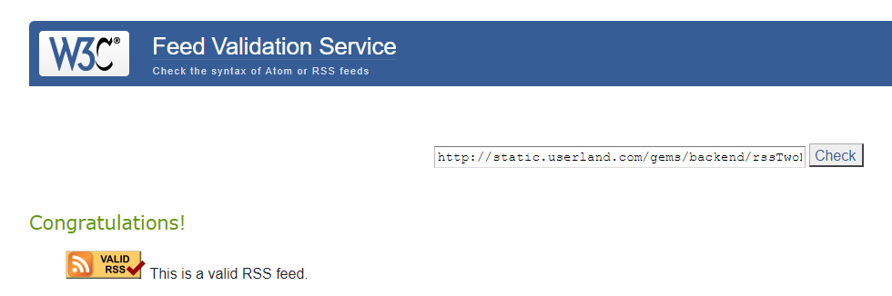
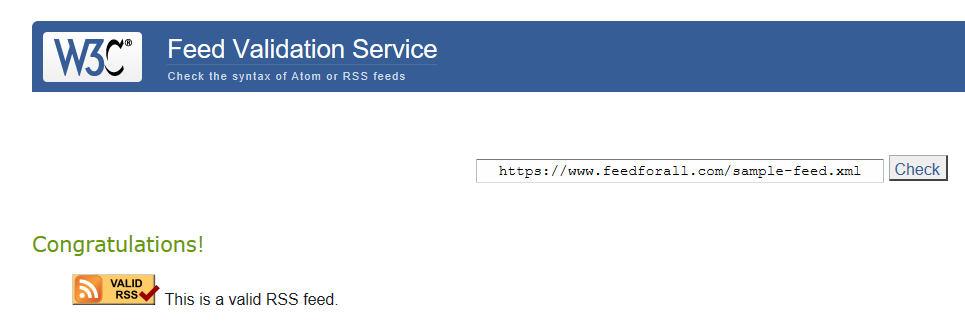
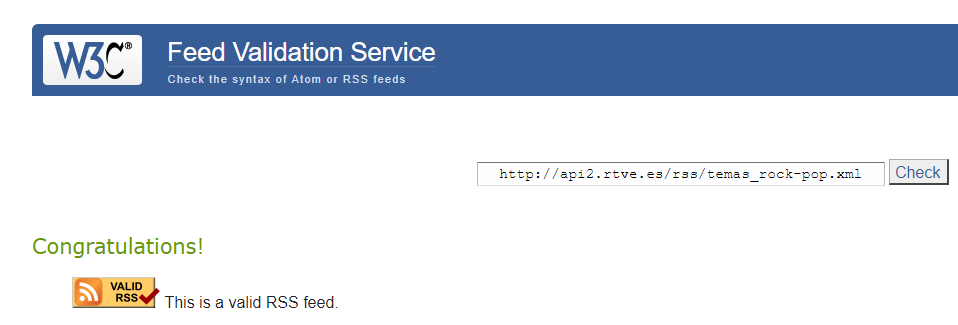
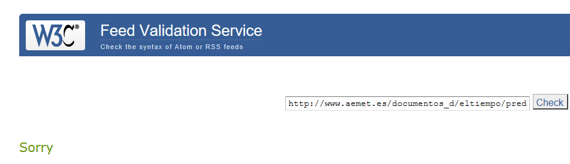

Enlaces de los XML
Responde a las siguientes preguntas
- Indica si es válido el feed
- Subsana los errores/warnings en su caso
- Indica channel o equivalente
- Indica número de items o equivalentes
1º Enlace
2º Ejercicio
Donde se declara el RSS se añade esto:
rss version="2.0" xmlns:atom="http://www.w3.org/2005/Atom%22%3E"
atom:link href="http://dallas.example.com/rss.xml" rel="self" type="application/rss+xml"
3º Ejercicio
Channel: line 4 --> Abre line 82 --> Cierra
4º Ejercicio
En la estructura XML hay 9 etiquetas items
2º Enlace
2º Ejercicio
Fallo imagen: Repite el título del channel
Fallo link: Usar el link del Channel.
El fallo de la etiqueta item:Añadir un guid unico a cada item
Donde se declara el RSS se añade esto:
rss version="2.0" xmlns:atom="http://www.w3.org/2005/Atom%22%3E"
atom:link href="http://dallas.example.com/rss.xml" rel="self" type="application/rss+xml"
3º Ejercicio
Channel: line 4 --> Abre line 50 --> Cierra
4º Ejercicio
En la estructura XML hay 3 etiquetas items
3º Enlace
2º Ejercicio
El fallo de la etiqueta item:Añadir un guid unico a cada item
Para solucionar el error de los style en las etiquetas description solo se deben borrar las etiquetas style
Donde se declara el RSS se añade esto:
rss version="2.0" xmlns:atom="http://www.w3.org/2005/Atom%22%3E"
atom:link href="http://dallas.example.com/rss.xml" rel="self" type="application/rss+xml"
3º Ejercicio
Channel: line 3 --> Abre line 421 --> Cierra
4º Ejercicio
En la estructura XML hay 69 etiquetas items
4 Enlace
2º Ejercicio
Fallo link: Usar el link del Channel.
Fallo id: Falta por añadir el "http://"
Fallo link: falta el rel:self
Fallo feed: feed xmlns:atom="http://www.w3.org/2005/Atom%22%3E"
3º Ejercicio
Feed (Similar al channel pero en el atom es feed) line 2 --> Abre line 20 --> Cierra
4º Ejercicio
En la estructura XML hay 1 etiquetas entry